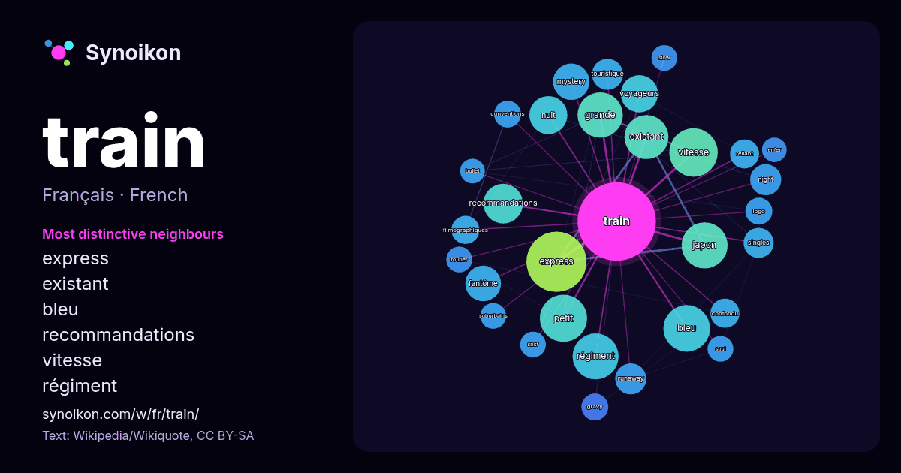

Français · liste des mots du jour
train
“train” · Les mots trouvés autour de lui dans 1322 occurrences issues de Wikipédia, Wikiquote.

Voisins les plus spécifiques
- express 56×
- existant 31×
- bleu 30×
- recommandations 26×
- vitesse 25×
- régiment 24×
- mystery 23×
- japon 21×
- fantôme 20×
- voyageurs 19×
- runaway 17×
- nuit 17×
- night 16×
- petit 15×
- touristique 15×
- confondu 15×
- filmographiques 14×
- reliant 13×
- gravy 13×
- conventions 12×
× = combien de fois plus souvent que dans le texte général de Wikipédia.
Voisins les plus fréquents
- express 60
- film 41
- vitesse 39
- petit 37
- bleu 36
- japon 35
- régiment 35
- grande 34
- existant 32
- nom 30
- faire 29
- recommandations 26
- nuit 24
- chanson 23
- voyageurs 23
- mystery 22
- fantôme 21
- français 20
- groupe 19
- albums 18
En contexte
- Pour les articles homonymes, voir Train (homonymie). Cet article ne cite pas suffisamment ses sources (mai 2019). Si vous disposez d'ouvrages ou d'articles Wikipedia snippets · Train
- Pour les articles homonymes, voir Train bleu. Le Train bleu était un train de luxe, officiellement baptisé « Calais-Méditerranée-Express », lancé en 1886 Wikipedia snippets · Train bleu (train)
- Last Train Last Train en 2025. De gauche à droite : Timothée Gerard, Antoine Baschung, Julien Peultier. Logo de Last Train. Last Train est un groupe de Wikipedia snippets · Last Train
- voir Configuration générale d'un avion. Les fonctions principales d'un train d'atterrissage consistent à permettre les évolutions au sol d'un aéronef Wikipedia snippets · Train d'atterrissage
- homonymes, voir Train (homonymie). L’expression Le Train désigne notamment : Le Train est un titre d'œuvre notamment porté par : Le Train (The Train) (1964), Wikipedia snippets · Le Train
- Pour l’article homonyme, voir Train (armée). Ne doit pas être confondu avec Chemin de fer militaire. Le train est l’arme qui organise et coordonne la Wikipedia snippets · Train (Armée française)
- Pour les articles homonymes, voir Train à grande vitesse (homonymie) et Train (homonymie). Bullet Train Logo du film. Pour plus de détails, voir Fiche Wikipedia snippets · Bullet Train
- correspondants. Un train de fret, ou train de marchandises, est un train destiné à transporter des marchandises, contrairement au train de voyageurs, destiné Wikipedia snippets · Train de fret
Autres mots
- art
- automne
- carte
- chanson
- chat
- chemin
- cheval
- chien
- climat
- cloche
- cœur
- dieu
- désert
- eau
- famille
- forêt
- histoire
- hiver
- horloge
- jardin
- langue
- miel
- miroir
- monnaie
- montagne
- mort
- mère
- nature
- nourriture
- ombre
- pain
- pluie
- pont
- pouvoir
- printemps
- santé
- science
- sel
- silence
- temps
- tempête
- thé
- travail
- trésor
- vie
- ville
- vérité
- étoile
- île
Précalculé le 2026-10-09 avec les paramètres par défaut (±5 mots, corpus moyen). La carte interactive peut l’actualiser avec des données en direct.
Interface traduite automatiquement ; corrections bienvenues.